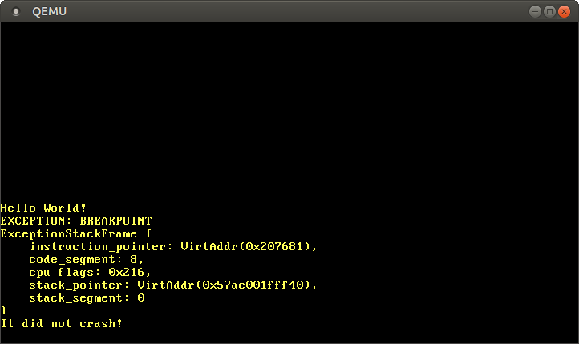

CPU 예외 (Exception)
번역된 내용 : 이것은 커뮤니티 멤버가 CPU Exceptions 포스트를 번역한 글입니다. 부족한 설명이나 오류, 혹은 시간이 지나 더 이상 유효하지 않은 정보를 발견하시면 제보해주세요!
번역한 사람 : @JOE1994. With contributions from @KimWang906.
CPU 예외 (exception)는 유효하지 않은 메모리 주소에 접근하거나 분모가 0인 나누기 연산을 하는 등 허용되지 않은 작업 실행 시 발생합니다. CPU 예외를 처리할 수 있으려면 예외 처리 함수 정보를 제공하는 인터럽트 서술자 테이블 (interrupt descriptor table; IDT) 을 설정해 두어야 합니다. 이 글에서는 커널이 breakpoint 예외를 처리한 후 정상 실행을 재개할 수 있도록 구현할 것입니다.
이 블로그는 GitHub 저장소에서 오픈 소스로 개발되고 있으니, 문제나 문의사항이 있다면 저장소의 ‘Issue’ 기능을 이용해 제보해주세요. 페이지 맨 아래에 댓글을 남기실 수도 있습니다. 이 포스트와 관련된 모든 소스 코드는 저장소의 post-05 브랜치에서 확인하실 수 있습니다.
목차
🔗개요
예외 (exception)는 현재 실행 중인 CPU 명령어에 문제가 있음을 알립니다. 예를 들면, 분모가 0인 나누기 연산을 CPU 명령어가 하려고 하면 CPU가 예외를 발생시킵니다. 예외가 발생하게 되면 CPU는 진행 중인 작업을 일시 중단한 후 즉시 예외 처리 함수 (exception handler)를 호출합니다 (발생한 예외의 종류에 따라 호출될 예외 처리 함수가 결정됩니다).
x86 아키텍처에는 20가지 정도의 CPU 예외가 존재합니다. 그 중 제일 중요한 것들은 아래와 같습니다:
- 페이지 폴트 (Page Fault): 접근이 허용되지 않은 메모리에 접근을 시도하는 경우 페이지 폴트가 발생하게 됩니다. 예를 들면, CPU가 실행하려는 명령어가 (1) 매핑되지 않은 페이지로부터 데이터를 읽어오려고 하거나, (2) 읽기 전용 페이지에 데이터를 쓰려고 하는 경우에 페이지 폴트가 발생합니다.
- 유효하지 않은 Opcode: CPU에 주어진 명령어의 Opcode를 CPU가 지원하지 않을 때 발생합니다. 새로 출시된 SSE 명령어를 구식 CPU에서 실행하려 하면 예외가 발생하게 됩니다.
- General Protection Fault: 이 예외는 가장 광범위한 원인을 가진 예외입니다. 사용자 레벨 코드에서 권한 수준이 높은 명령어 (privileged instruction)를 실행하거나 configuration 레지스터를 덮어 쓰는 등 다양한 접근 권한 위반 상황에 발생합니다.
- 더블 폴트 (Double Fault): 예외 발생 시 CPU는 알맞은 예외 처리 함수의 호출을 시도합니다. 예외 처리 함수를 호출하는 도중에 또 예외가 발생하는 경우, CPU는 더블 폴트 (double fault) 예외를 발생시킵니다. 또한 예외를 처리할 예외 처리 함수가 등록되지 않은 경우에도 더블 폴트 예외가 발생합니다.
- 트리플 폴트 (Triple Fault) : CPU가 더블 폴트 예외 처리 함수를 호출하려고 하는 사이에 예외가 발생하는 경우, CPU는 치명적인 트리플 폴트 (triple fault) 예외를 발생시킵니다. 트리플 폴트 예외를 처리하는 것은 불가능 하므로 대부분의 프로세서들은 트리플 폴트 발생 시 프로세서를 초기화하고 운영체제를 재부팅합니다.
모든 CPU 예외들의 목록을 보시려면 OSDev wiki를 확인해주세요.
🔗인터럽트 서술사 테이블 (Interrupt Descriptor Table)
예외 발생을 포착하고 대응할 수 있으려면 인터럽트 서술자 테이블 (Interrupt Descriptor Table; IDT) 이 필요합니다. 이 테이블을 통해 우리는 각각의 CPU 예외를 어떤 예외 처리 함수가 처리할지 지정합니다. 하드웨어에서 이 테이블을 직접 사용하므로 테이블의 형식은 정해진 표준에 따라야 합니다. 테이블의 각 엔트리는 아래와 같은 16 바이트 구조를 따릅니다:
| 타입 | 이름 | 설명 |
|---|---|---|
| u16 | Function Pointer [0:15] | 예외 처리 함수에 대한 64비트 포인터의 하위 16비트 |
| u16 | GDT selector | 전역 서술자 테이블 (global descriptor table)에서 코드 세그먼트를 선택하는 값 |
| u16 | Options | (표 아래의 설명 참조) |
| u16 | Function Pointer [16:31] | 예외 처리 함수에 대한 64비트 포인터의 2번째 하위 16비트 |
| u32 | Function Pointer [32:63] | 예외 처리 함수에 대한 64비트 포인터의 상위 32비트 |
| u32 | Reserved | 사용 보류 중인 영역 |
Options 필드는 아래의 형식을 갖습니다:
| 비트 구간 | 이름 | 설명 |
|---|---|---|
| 0-2 | Interrupt Stack Table Index | 0: 스택을 교체하지 않는다, 1-7: 이 인터럽트 처리 함수가 호출된 경우 Interrupt Stack Table의 n번째 스택으로 교체한다. |
| 3-7 | Reserved | 사용 보류 중인 영역 |
| 8 | 0: Interrupt Gate, 1: Trap Gate | 비트가 0이면 이 예외 처리 함수가 호출 이후 인터럽트 발생 억제 |
| 9-11 | must be one | 각 비트는 언제나 1 |
| 12 | must be zero | 언제나 0 |
| 13‑14 | Descriptor Privilege Level (DPL) | 이 예외 처리 함수를 호출하는 데에 필요한 최소 특권 레벨 |
| 15 | Present |
각 예외마다 IDT에서의 인덱스가 배정되어 있습니다. invalid opcode 예외는 테이블 인덱스 6이 배정되어 있고, 페이지 폴트 예외는 테이블 인덱스 14가 배정되어 있습니다. 하드웨어는 미리 배정된 인덱스를 이용해 각 예외에 대응하는 IDT 엔트리를 자동으로 불러올 수 있습니다. OSDev 위키의 Exception Table의 “Vector nr.”로 명명된 열을 보시면 모든 예외 및 배정된 인덱스를 확인하실 수 있습니다.
예외가 발생하면 CPU는 대략 아래의 작업들을 순서대로 진행합니다:
- Instruction Pointer 레지스터와 RFLAGS 레지스터를 비롯해 몇몇 레지스터들의 값을 스택에 push (저장)합니다 (나중에 이 값들을 사용할 것입니다).
- 발생한 예외의 엔트리를 인터럽트 서술사 테이블 (IDT)로부터 읽어옵니다. 예를 들면, 페이지 폴트 발생 시 CPU는 IDT의 14번째 엔트리를 읽어옵니다.
- 등록된 엔트리가 없을 경우, 더블 폴트 예외를 발생시킵니다.
- 해당 엔트리가 인터럽트 게이트인 경우 (40번 비트 = 0), 하드웨어 인터럽트 발생을 억제합니다.
- 지정된 GDT 선택자를 CS 세그먼트로 읽어옵니다.
- 지정된 예외 처리 함수로 점프합니다.
위의 4단계와 5단계가 잘 이해되지 않아도 걱정 마세요. 전역 서술자 테이블 (Global Descriptor Table; GDT)과 하드웨어 인터럽트는 이후에 다른 글에서 더 설명할 것입니다.
🔗IDT 타입
IDT를 나타내는 타입을 직접 구현하지 않고 x86_64 크레이트의 InterruptDescriptorTable 구조체 타입을 사용합니다:
#[repr(C)]
pub struct InterruptDescriptorTable {
pub divide_by_zero: Entry<HandlerFunc>,
pub debug: Entry<HandlerFunc>,
pub non_maskable_interrupt: Entry<HandlerFunc>,
pub breakpoint: Entry<HandlerFunc>,
pub overflow: Entry<HandlerFunc>,
pub bound_range_exceeded: Entry<HandlerFunc>,
pub invalid_opcode: Entry<HandlerFunc>,
pub device_not_available: Entry<HandlerFunc>,
pub double_fault: Entry<HandlerFuncWithErrCode>,
pub invalid_tss: Entry<HandlerFuncWithErrCode>,
pub segment_not_present: Entry<HandlerFuncWithErrCode>,
pub stack_segment_fault: Entry<HandlerFuncWithErrCode>,
pub general_protection_fault: Entry<HandlerFuncWithErrCode>,
pub page_fault: Entry<PageFaultHandlerFunc>,
pub x87_floating_point: Entry<HandlerFunc>,
pub alignment_check: Entry<HandlerFuncWithErrCode>,
pub machine_check: Entry<HandlerFunc>,
pub simd_floating_point: Entry<HandlerFunc>,
pub virtualization: Entry<HandlerFunc>,
pub security_exception: Entry<HandlerFuncWithErrCode>,
// 일부 필드는 생략했습니다
}
구조체의 각 필드는 IDT의 엔트리를 나타내는 idt::Entry<F> 타입을 가집니다. 타입 인자 F는 사용될 예외 처리 함수의 타입을 정의합니다. 어떤 엔트리는 F에 HandlerFunc를 또는 F에 HandlerFuncWithErrCode를 필요로 하며 페이지 폴트는 PageFaultHandlerFunc를 필요로 합니다.
HandlerFunc 타입을 먼저 살펴보겠습니다:
type HandlerFunc = extern "x86-interrupt" fn(_: InterruptStackFrame);
HandlerFunc는 함수 타입 extern "x86-interrupt" fn의 타입 별칭입니다. extern 키워드는 외부 함수 호출 규약 (foreign calling convention)을 사용하는 함수를 정의할 때 쓰이는데, 주로 C 함수와 상호작용하는 경우에 쓰입니다 (extern "C" fn). x86-interrupt 함수 호출 규약은 무엇일까요?
🔗인터럽트 호출 규약
예외는 함수 호출과 유사한 점이 많습니다: 호출된 함수의 첫 명령어로 CPU가 점프한 후 함수 안의 명령어들을 차례대로 실행합니다. 그 후 CPU가 반환 주소로 점프하고, 기존에 실행 중이었던 함수의 실행을 이어갑니다.
하지만 예외와 함수 호출 사이에 중요한 차이점이 있습니다: 일반 함수의 경우 컴파일러가 삽입한 call 명령어를 통해 호출하지만, 예외는 어떤 명령어 실행 도중에라도 발생할 수 있습니다. 이 차이점의 중대성을 이해하려면 함수 호출 과정을 더 면밀히 살펴봐야 합니다.
함수 호출 규약은 함수 호출 과정의 세부 사항들을 규정합니다. 예를 들면, 함수 인자들이 어디에 저장되는지 (레지스터 또는 스택), 함수의 반환 값을 어떻게 전달할지 등을 정합니다. x86_64 리눅스에서 C 함수 호출 시 System V ABI가 규정하는 아래의 규칙들이 적용됩니다:
- 함수의 첫 여섯 인자들은
rdi,rsi,rdx,rcx,r8,r9레지스터에 저장합니다 - 7번째 함수 인자부터는 모두 스택에 저장합니다
- 함수의 반환 값은
rax와rdx레지스터에 저장됩니다
참고로 Rust는 C ABI를 따르지 않기에 (사실, Rust는 규정된 ABI가 존재하지 않습니다), 이 법칙들은 extern "C" fn으로 정의된 함수들에만 적용됩니다.
🔗Preserved 레지스터와 Scratch 레지스터
함수 호출 규약은 레지스터들을 크게 두 가지 (preserved 레지스터와 scratch 레지스터)로 분류합니다.
preserved 레지스터들의 값은 함수 호출 전/후에 보존되어야 합니다. 호출된 함수 (callee)가 이 레지스터들에 다른 값을 저장해 사용하려면 반환 직전에 이 레지스터들에 원래 저장되어 있던 값을 복원해 놓아야 합니다. preserved 레지스터는 “callee-saved” 레지스터라고도 불립니다. 함수 실행 시작 시 이 레지스터들의 값들을 스택에 저장했다가 함수 반환 직전에 복구하는 것이 일반적입니다.
반면, 호출된 함수가 scratch 레지스터들의 값을 자유롭게 덮어 쓰는 것은 괜찮습니다. 함수 호출 전/후로 scratch 레지스터의 값을 보존하고 싶다면, 호출하는 측 (caller)이 함수 호출 전에 레지스터의 값을 스택에 저장해뒀다가 함수의 실행이 끝난 후 레지스터의 값을 본래 값으로 복원해야 합니다. scratch 레지스터는 “caller-saved” 레지스터라고도 불립니다.
x86_64에서는 C 함수 호출 규약이 preserved 레지스터와 scratch 레지스터를 아래와 같이 정합니다:
| preserved 레지스터 | scratch 레지스터 |
|---|---|
rbp, rbx, rsp, r12, r13, r14, r15 | rax, rcx, rdx, rsi, rdi, r8, r9, r10, r11 |
| callee-saved | caller-saved |
컴파일러는 이 규칙들에 따라 코드를 컴파일 합니다. 예를 들면 대부분의 함수들은 push rbp 로 시작하는데, 이는 callee-saved 레지스터인 rbp를 스택에 저장합니다.
🔗모든 레지스터들의 값 보존하기
함수 호출과 달리 예외는 어떤 명령어가 실행 중이든 관계 없이 발생할 수 있습니다. 대체로 컴파일 시간에는 컴파일 결과 생성된 코드가 예외를 발생시킬지의 유무를 장담하기 어렵습니다. 예를 들어, 컴파일러는 임의의 명령어가 스택 오버플로우 또는 페이지 폴트를 일으킬지 판별하기 어렵습니다.
예외가 언제 발생할지 알 수 없다보니 레지스터에 저장된 값들을 미리 백업해놓을 수가 없습니다. 즉, 예외 처리 함수 구현 시 caller-saved 레지스터에 의존하는 함수 호출 규약을 사용할 수가 없습니다. 예외 처리 함수 구현 시 모든 레지스터 들의 값을 보존하는 함수 호출 규약을 사용해야 합니다. 예시로 x86-interrupt 함수 호출 규약은 함수 반환 시 모든 레지스터들의 값이 함수 호출 이전과 동일하게 복원되도록 보장합니다.
함수 실행 시작 시 모든 레지스터들의 값이 스택에 저장된다는 뜻은 아닙니다. 호출된 함수가 덮어 쓸 레지스터들만을 컴파일러가 스택에 백업합니다. 이렇게 하면 적은 수의 레지스터를 사용하는 함수를 컴파일 할 때 짧고 효율적인 코드를 생성할 수 있습니다.
🔗인터럽트 스택 프레임
일반적인 함수 호출 시 (call 명령어 이용), CPU는 호출된 함수로 제어 흐름을 넘기기 전에 반환 주소를 스택에 push (저장)합니다. 함수 반환 시 (ret 명령어 이용), CPU는 스택에 저장해뒀던 반환 주소를 읽어온 후 해당 주소로 점프합니다. 일반적인 함수 호출 시 스택 프레임의 모습은 아래와 같습니다:

예외 및 인터럽트 처리 함수의 경우, 일반 함수가 실행되는 CPU 컨텍스트 (스택 포인터, CPU 플래그 등)가 아닌 별개의 CPU 컨텍스트에서 실행됩니다. 따라서 단순히 스택에 반환 주소를 push하는 것보다 더 복잡한 사전 처리가 필요합니다. 인터럽트 발생 시 CPU가 아래의 작업들을 처리합니다.
- 스택 포인터 정렬: 인터럽트는 어느 명령어의 실행 중에도 발생할 수 있고, 따라서 스택 포인터 또한 임의의 값을 가질 수 있습니다. 하지만 특정 CPU 명령어들 (예: 일부 SSE 명령어)은 스택 포인터가 16바이트 단위 경계에 정렬되어 있기를 요구합니다. 따라서 CPU는 인터럽트 발생 직후에 스택 포인터를 알맞게 정렬합니다.
- 스택 교체 (경우에 따라서): CPU의 특권 레벨 (privilege level)이 바뀌는 경우에 스택 교체가 일어납니다 (예: 사용자 모드 프로그램에서 CPU 예외가 발생할 때). 또한 인터럽트 스택 테이블 (Interrupt Stack Table) 을 이용해 특정 인터럽트 발생 시 스택 교체가 이뤄지도록 설정하는 것 또한 가능합니다 (이후 다른 글에서 설명할 내용입니다).
- 이전의 스택 포인터 push: 인터럽트 발생 시, CPU는 스택 포인터를 정렬하기에 앞서 스택 포인터 (
rsp)와 스택 세그먼트 (ss) 레지스터들을 저장 (push)합니다. 이로써 인터럽트 처리 함수로부터 반환 시 이전의 스택 포인터를 복원할 수 있습니다. RFLAGS레지스터 push 및 수정:RFLAGS레지스터는 CPU의 다양한 제어 및 상태 비트들을 저장합니다. 인터럽트 발생 시 CPU는 기존 값을 push한 후 일부 비트들의 값을 변경합니다.- instruction pointer push: 인터럽트 처리 함수로 점프하기 전에, CPU는 instruction pointer (
rip)와 code segment (cs) 레지스터들을 push합니다. 이는 일반 함수 호출 시 반환 주소를 push하는 것과 유사합니다. - 오류 코드 push (일부 예외만 해당): 페이지 폴트 같은 일부 예외의 경우, CPU는 예외의 원인을 설명하는 오류 코드를 push합니다.
- 인터럽트 처리 함수 호출: CPU는 IDT로부터 인터럽트 처리 함수의 주소와 세그먼트 서술자 (segment descriptor)를 읽어옵니다. 읽어온 값들을 각각
rip레지스터와cs레지스터에 저장함으로써 인터럽트 처리 함수를 호출합니다.
인터럽트 스택 프레임 은 아래와 같은 모습을 가집니다:

x86_64 크레이트에서는 InterruptStackFrame 구조체 타입을 통해 인터럽트 스택 프레임을 구현합니다. 예외 처리 함수들은 &mut InterruptStackFrame를 인자로 받아서 예외 발생 원인에 대한 추가 정보를 얻을 수 있습니다. 이 구조체는 오류 코드를 저장하는 필드를 갖고 있지 않은데, 그 이유는 아주 일부의 예외들만이 오류 코드를 반환하기 때문입니다. 오류 코드를 반환하는 예외들은 HandlerFuncWithErrCode 함수 타입을 사용하는데, 이 함수 타입은 추가적으로 error_code 인자를 받습니다.
🔗무대 뒤의 상황
함수 호출 규약 x86-interrupt는 예외 처리 과정의 세부적인 사항들을 대부분 숨겨주는 강력한 추상화 계층입니다. 하지만 때로는 추상화 계층 안에서 무슨 일이 일어나는지 알아두는 것이 도움이 됩니다. 아래는 함수 호출 규약 x86-interrupt가 처리하는 작업들의 개요입니다.
- 함수 인자 읽어오기: 대부분의 함수 호출 규약들은 함수 인자들이 레지스터를 통해 전달되는 것으로 생각합니다. 그러나 예외 처리 함수는 그렇게 할 수가 없습니다. 그 이유는 스택에 레지스터들의 값들을 백업하기 전에는 어떤 레지스터도 덮어 쓸 수 없기 때문입니다. 함수 호출 규약
x86-interrupt는 함수 인자들이 레지스터가 아니라 스택의 특정 위치에 저장되어 있다고 가정합니다. iretq를 통해 반환: 인터럽트 스택 프레임은 일반 함수 호출 시 사용되는 스택 프레임과는 완전히 별개의 것이라서ret명령어를 사용해서는 인터럽트 처리 함수로부터 제대로 반환할 수 없습니다. 대신iretq명령어를 사용하여 반환합니다.- 오류 코드 처리: 일부 예외에 한해 push되는 오류 코드는 일을 번거롭게 합니다. 이 오류 코드로 인해 스택 정렬이 망가뜨려지며 (아래 ‘스택 정렬’ 항목 참고), 예외 처리 함수로부터 반환하기 전에 오류 코드를 스택으로부터 pop (제거)해야 합니다. 함수 호출 규약
x86-interrupt가 오류 코드로 인한 번거로움을 대신 감당해줍니다.x86-interrupt는 어떤 예외 처리 함수가 어떤 예외에 대응하는지 알지 못하기에, 함수의 인자 개수를 통해 해당 정보를 유추합니다. 따라서 개발자는 오류 코드가 push되는 예외와 그렇지 않은 예외에 대해 각각 정확한 함수 타입을 사용해야만 합니다. 다행히x86_64크레이트가 제공하는InterruptDescriptorTable타입이 각 경우에 정확한 함수 타입이 사용되도록 보장합니다. - 스택 정렬: 일부 명령어들 (특히 SSE 명령어)은 스택이 16 바이트 경계에 정렬되어 있기를 요구합니다. 예외 발생 시 CPU는 해당 정렬이 맞춰져 있도록 보장하지만, 일부 예외의 경우에는 오류 코드를 push하면서 맞춰져 있던 정렬을 망가뜨립니다. 함수 호출 규약
x86-interrupt는 해당 상황에서 망가진 정렬을 다시 맞춰줍니다.
더 자세한 내용이 궁금하시다면, naked 함수를 사용한 예외 처리 과정을 설명하는 저희 블로그의 또다른 글 시리즈를 참고하세요 (링크는 이 글의 맨 마지막을 참조).
🔗구현
이론적 배경 설명은 끝났고, 이제 CPU 예외 처리 기능을 커널에 구현해보겠습니다. 새로운 모듈 interrupts를 src/interrupts.rs에 만든 후, 새로운 InterruptDescriptorTable을 생성하는 함수 init_idt를 작성합니다.
// in src/lib.rs
pub mod interrupts;
// in src/interrupts.rs
use x86_64::structures::idt::InterruptDescriptorTable;
pub fn init_idt() {
let mut idt = InterruptDescriptorTable::new();
}
이제 예외 처리 함수들을 추가할 수 있습니다. breakpoint 예외를 위한 예외 처리 함수부터 작성해보겠습니다. breakpoint 예외는 예외 처리를 테스트하는 용도에 안성맞춤입니다. breakpoint 예외의 유일한 용도는 breakpoint 명령어 int3가 실행되었을 때 실행 중인 프로그램을 잠시 멈추는 것입니다.
breakpoint 예외는 디버거 (debugger)에서 자주 사용됩니다: 사용자가 breakpoint를 설정하면 디버거는 breakpoint에 대응되는 명령어를 int3 명령어로 치환하는데, 이로써 해당 명령어에 도달했을 때 CPU가 breakpoint 예외를 발생시킵니다. 사용자가 프로그램 실행을 재개하면 디버거는 int3 명령어를 원래의 명령어로 다시 교체한 후 프로그램 실행을 재개합니다. 더 자세한 내용이 궁금하시면 “How debuggers work” 시리즈를 읽어보세요.
지금 우리가 breakpoint 예외를 사용하는 상황에서는 명령어를 덮어쓸 필요가 전혀 없습니다. 우리는 breakpoint 예외가 발생했을 때 그저 메시지를 출력한 후 프로그램 실행을 재개하기만 하면 됩니다. 간단한 예외 처리 함수 breakpoint_handler를 만들고 IDT에 추가합니다:
// in src/interrupts.rs
use x86_64::structures::idt::{InterruptDescriptorTable, InterruptStackFrame};
use crate::println;
pub fn init_idt() {
let mut idt = InterruptDescriptorTable::new();
idt.breakpoint.set_handler_fn(breakpoint_handler);
}
extern "x86-interrupt" fn breakpoint_handler(
stack_frame: InterruptStackFrame)
{
println!("EXCEPTION: BREAKPOINT\n{:#?}", stack_frame);
}
이 예외 처리 함수는 간단한 메시지와 함께 인터럽트 스택 프레임의 정보를 출력합니다.
컴파일을 시도하면 아래와 같은 오류 메시지가 출력됩니다:
error[E0658]: x86-interrupt ABI is experimental and subject to change (see issue #40180)
--> src/main.rs:53:1
|
53 | / extern "x86-interrupt" fn breakpoint_handler(stack_frame: InterruptStackFrame) {
54 | | println!("EXCEPTION: BREAKPOINT\n{:#?}", stack_frame);
55 | | }
| |_^
|
= help: add #![feature(abi_x86_interrupt)] to the crate attributes to enable
이 오류는 함수 호출 규약 x86-interrupt가 아직 unstable 하여 발생합니다. lib.rs의 맨 위에 #![feature(abi_x86_interrupt)] 속성을 추가하여 함수 호출 규약 x86-interrupt의 사용을 강제합니다.
🔗IDT 불러오기
우리가 만든 인터럽트 서술사 테이블을 CPU가 사용하도록 하려면, 먼저 lidt 명령어를 통해 해당 테이블을 불러와야 합니다. x86_64 크레이트가 제공하는 InterruptDescriptorTable 구조체의 함수 load를 통해 테이블을 불러옵니다:
// in src/interrupts.rs
pub fn init_idt() {
let mut idt = InterruptDescriptorTable::new();
idt.breakpoint.set_handler_fn(breakpoint_handler);
idt.load();
}
컴파일 시 아래와 같은 오류가 발생합니다:
error: `idt` does not live long enough
--> src/interrupts/mod.rs:43:5
|
43 | idt.load();
| ^^^ does not live long enough
44 | }
| - borrowed value only lives until here
|
= note: borrowed value must be valid for the static lifetime...
load 함수는 &'static self 타입의 인자를 받는데, 이 타입은 프로그램 실행 시간 전체 동안 유효한 레퍼런스 타입입니다. 우리가 새로운 IDT를 로드하지 않는 이상 프로그램 실행 중 인터럽트가 발생할 때마다 CPU가 이 테이블에 접근할 것이기에, 'static 라이프타임보다 짧은 라이프타임을 사용하면 use-after-free 버그가 발생할 수 있습니다.
idt는 스택에 생성되어 init 함수 안에서만 유효합니다. init 함수를 벗어나면 해당 스택 메모리는 다른 함수에 의해 재사용되므로 해당 메모리를 IDT로서 간주하고 참조한다면 임의의 함수의 스택 메모리로부터 데이터를 읽어오게 됩니다.
다행히 InterruptDescriptorTable::load 함수 정의에 라이프타임 요구 사항이 포함되어 있어 Rust 컴파일러가 잠재적인 use-after-free 버그를 컴파일 도중에 막아줍니다.
이 문제를 해결하려면 idt를 'static 라이프타임을 갖는 곳에 저장해야 합니다. Box를 통해 IDT를 힙 (heap) 메모리에 할당한 뒤 Box 에 저장된 IDT에 대한 'static 레퍼런스를 얻는 것은 해결책이 되지 못합니다. 그 이유는 아직 우리가 커널에 힙 메모리를 구현하지 않았기 때문입니다.
대안으로 IDT를 static 변수에 저장하는 것을 시도해보겠습니다:
static IDT: InterruptDescriptorTable = InterruptDescriptorTable::new();
pub fn init_idt() {
IDT.breakpoint.set_handler_fn(breakpoint_handler);
IDT.load();
}
문제는 static 변수의 값은 변경할 수가 없어서, init 함수 실행 시 breakpoint 예외에 대응하는 IDT 엔트리를 수정할 수 없습니다.
대신 IDT를 static mut 변수에 저장해보겠습니다:
static mut IDT: InterruptDescriptorTable = InterruptDescriptorTable::new();
pub fn init_idt() {
unsafe {
IDT.breakpoint.set_handler_fn(breakpoint_handler);
IDT.load();
}
}
이제 컴파일 오류가 발생하지는 않지만, Rust에서 static mut의 사용은 권장되지 않습니다. static mut는 데이터 레이스 (data race)를 일으키기 쉽기에, static mut 변수에 접근할 때마다 unsafe 블록을 반드시 사용해야 합니다.
🔗초기화 지연이 가능한 Static 변수 (Lazy Statics)
다행히 lazy_static 매크로를 사용하면 static 변수의 초기화를 컴파일 도중이 아니라 프로그램 실행 중 해당 변수가 처음 읽어지는 시점에 일어나게 할 수 있습니다. 따라서 프로그램 실행 시간에 다른 변수의 값을 읽어오는 등 거의 모든 작업을 변수 초기화 블록 안에서 제약 없이 진행할 수 있습니다.
이전에 VGA 텍스트 버퍼에 대한 추상 인터페이스를 구현 시 의존 크레이트 목록에 lazy_static을 이미 추가했습니다. lazy_static! 매크로를 바로 사용하여 static 타입의 IDT를 생성합니다:
// in src/interrupts.rs
use lazy_static::lazy_static;
lazy_static! {
static ref IDT: InterruptDescriptorTable = {
let mut idt = InterruptDescriptorTable::new();
idt.breakpoint.set_handler_fn(breakpoint_handler);
idt
};
}
pub fn init_idt() {
IDT.load();
}
이 코드에서는 unsafe 블록이 필요하지 않습니다. lazy_static! 매크로의 내부 구현에서는 unsafe가 사용되지만, 안전한 추상 인터페이스 덕분에 unsafe가 외부로 드러나지 않습니다.
🔗실행하기
마지막으로 main.rs에서 init_idt 함수를 호출하면 커널에서 예외 발생 및 처리가 제대로 작동합니다.
직접 init_idt 함수를 호출하는 대신 범용 초기화 함수 init을 lib.rs에 추가합니다:
// in src/lib.rs
pub fn init() {
interrupts::init_idt();
}
main.rs와 lib.rs 및 통합 테스트들의 _start 함수들에서 공용으로 사용하는 초기화 루틴들의 호출은 앞으로 이 init 함수에 한데 모아 관리할 것입니다.
main.rs의 _start_ 함수가 init 함수를 호출한 후 breakpoint exception을 발생시키도록 코드를 추가합니다:
// in src/main.rs
#[no_mangle]
pub extern "C" fn _start() -> ! {
println!("Hello World{}", "!");
blog_os::init(); // 새로 추가한 코드
// invoke a breakpoint exception
x86_64::instructions::interrupts::int3(); // 새로 추가한 코드
// as before
#[cfg(test)]
test_main();
println!("It did not crash!");
loop {}
}
cargo run을 통해 QEMU에서 커널을 실행하면 아래의 출력 내용을 얻습니다:

성공입니다! CPU가 성공적으로 예외 처리 함수 breakpoint_handler를 호출했고, 예외 처리 함수가 메시지를 출력했으며, 그 후 _start 함수로 제어 흐름이 돌아와 It did not crash! 메시지도 출력됐습니다.
예외가 발생한 시점의 명령어 및 스택 포인터들을 인터럽트 스택 프레임이 알려줍니다. 이 정보는 예상치 못한 예외를 디버깅할 때 매우 유용합니다.
🔗테스트 추가하기
위에서 확인한 동작을 위한 테스트를 작성해봅시다. 우선 _start 함수가 init 함수를 호출하도록 수정합니다:
// in src/lib.rs
/// Entry point for `cargo test`
#[cfg(test)]
#[no_mangle]
pub extern "C" fn _start() -> ! {
init(); // 새로 추가한 코드
test_main();
loop {}
}
Rust는 lib.rs를 main.rs와는 독립적으로 테스트하기 때문에 이 _start 함수는 cargo test --lib 실행 시에만 사용된다는 것을 기억하세요. 테스트 실행 전에 init 함수를 먼저 호출하여 IDT를 만들고 테스트 실행 시 사용되도록 설정합니다.
이제 test_breakpoint_exception 테스트를 생성할 수 있습니다:
// in src/interrupts.rs
#[test_case]
fn test_breakpoint_exception() {
// invoke a breakpoint exception
x86_64::instructions::interrupts::int3();
}
테스트는 int3 함수를 호출하여 breakpoint 예외를 발생시킵니다. 예외 처리 후, 이전에 실행 중이었던 프로그램의 실행이 재개함을 확인함으로써 breakpoint handler가 제대로 작동하는지 점검합니다.
cargo test (모든 테스트 실행) 혹은 cargo test --lib (lib.rs 및 그 하위 모듈의 테스트만 실행) 커맨드를 통해 이 새로운 테스트를 실행해보세요. 테스트 실행 결과가 아래처럼 출력될 것입니다:
blog_os::interrupts::test_breakpoint_exception... [ok]
🔗더 자세히 파헤치고 싶은 분들께
x86-interrupt 함수 호출 규약과 InterruptDescriptorTable 타입 덕분에 비교적 쉽게 예외 처리를 구현할 수 있었습니다. 예외 처리 시 우리가 이용한 추상화 단계 아래에서 일어나는 일들을 자세히 알고 싶으신가요? 그런 분들을 위해 준비했습니다: 저희 블로그의 또다른 글 시리즈 “Handling Exceptions with Naked Functions”는 x86-interrupt 함수 호출 규약 없이 예외 처리를 구현하는 과정을 다루며, IDT 타입을 직접 구현하여 사용합니다. 해당 글 시리즈는 x86-interrupt 함수 호출 규약 및 x86_64 크레이트가 생기기 이전에 작성되었습니다. 해당 시리즈는 이 블로그의 첫 번째 버전에 기반하여 작성되었기에 오래되어 더 이상 유효하지 않은 정보가 포함되어 있을 수 있으니 참고 부탁드립니다.
🔗다음 단계는 무엇일까요?
이번 포스트에서 예외 (exception)를 발생시키고 처리한 후 예외로부터 반환하는 것까지 성공했습니다. 다음 단계는 우리의 커널이 모든 예외를 처리할 수 있게 하는 것입니다. 제대로 처리되지 않은 예외는 치명적인 트리플 폴트 (triple fault)를 발생시켜 시스템이 리셋하도록 만듭니다. 다음 포스트에서는 트리플 폴트가 발생하지 않도록 더블 폴트 (double fault)를 처리하는 방법을 다뤄보겠습니다.
댓글
Do you have a problem, want to share feedback, or discuss further ideas? Feel free to leave a comment here! Please stick to English and follow Rust's code of conduct. This comment thread directly maps to a discussion on GitHub, so you can also comment there if you prefer.
Instead of authenticating the giscus application, you can also comment directly on GitHub.
댓글은 가능하면 영어로 작성해주세요.